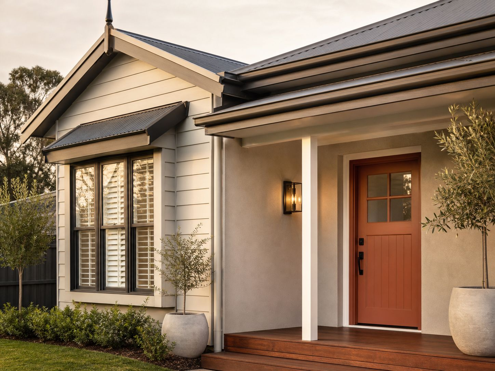
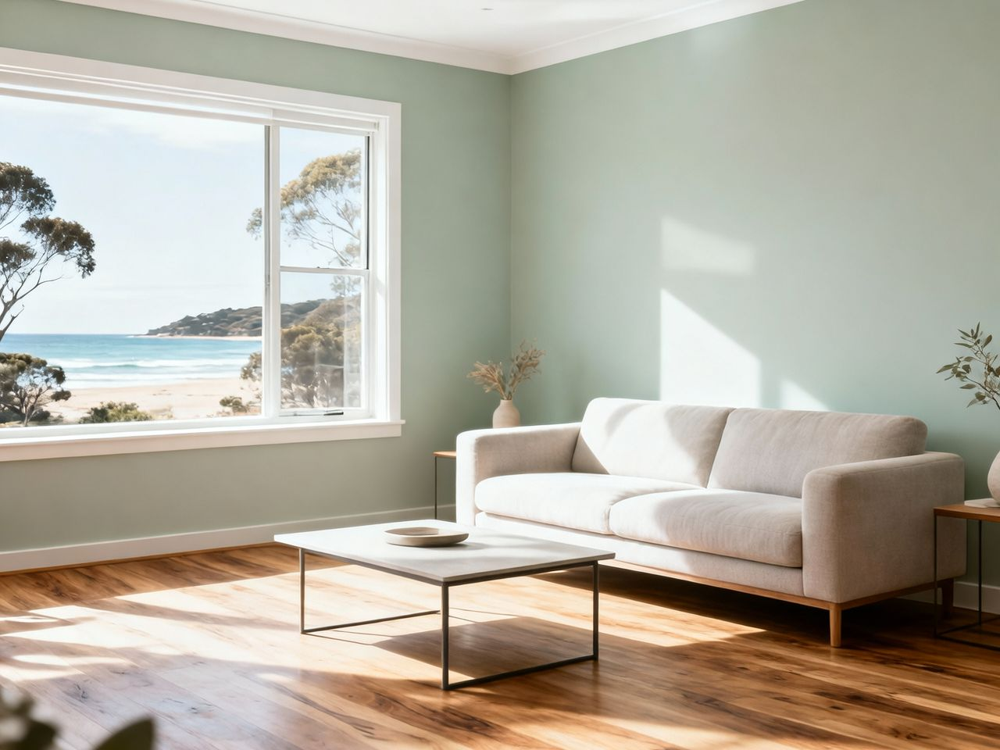
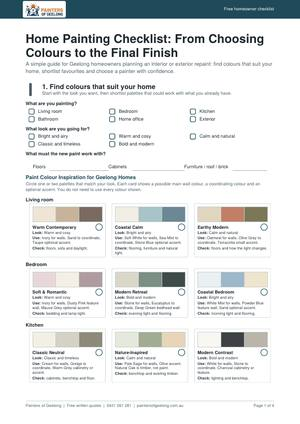
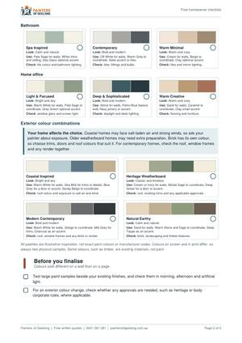
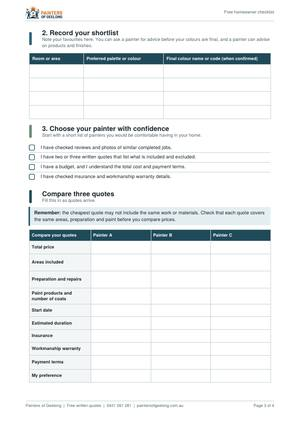
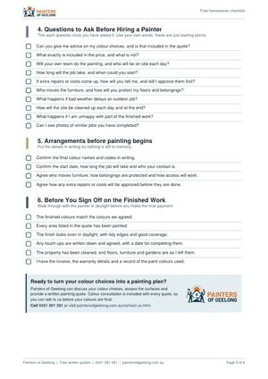

Colour choices go wrong most often when people start at the paint chart instead of the house. This guide takes the decisions in the order that avoids the usual mistakes, and every topic links to a detailed article. Choose outside or inside (living room, kitchen, bedroom or bathroom) below, then tap a part of the home to see what to check first.
Roof
Read next
In short
- Fixed elements first. Roof, brick, render, flooring, benchtops and cabinetry set the limits before you pick a single paint.
- Match undertones, not just shades. A colour can be the right depth and still clash because of the hint of yellow, red, blue or green underneath it.
- Judge in your own light. Look at the colour in the morning, the afternoon and under your lamps at night.
- Test a large sample in place, beside the elements it has to live with.
- Save trend colours for small, easy-to-change surfaces. Keep the big, expensive-to-redo areas calm.
The order to decide in
Colour decisions depend on each other, so the order matters. These six steps work for a full repaint and for a single room.
- List what can't change.Roof, unpainted brick, render you aren't repainting, flooring, benchtops, fixed cabinetry. Photograph each one in daylight so you can compare colours against real material, not memory.
- Read the undertones of those elements.Decide whether each leans warm (yellow, red, cream) or cool (blue, green, grey). Two fixed elements with opposite undertones are the main reason palettes feel unsettled.
- Check how your light behaves.The direction a wall faces, the time of day you use the room, and the bulbs you use all change how paint looks.
- Give every colour a job.A main wall colour, a trim colour and one accent is enough for most homes. A colour with no job is usually one too many.
- Test large samples in place.Small swatches mislead. Paint a patch big enough to judge, next to the fixed elements.
- Settle the finish and confirm the preparation.Sheen changes how a colour reads, and preparation decides how long it lasts.
Choosing exterior colours
An exterior is a system, not a single colour. The roof, walls, gutters, fascia, window frames and doors are read together from the street. Start from the element you can't change and work outward.
Which part of the exterior should I settle first?
The roof. It is usually the largest fixed colour, and everything else has to sit comfortably beside it. Work out whether it reads warm or cool and how dark it is, then choose the wall colour, then the smaller parts.
| Element | What it decides | Check first | Go deeper |
|---|---|---|---|
| Roof | The overall palette and how heavy the house looks | Warm or cool, light or dark | Colorbond roofsSoon · Matching the exteriorSoon |
| Brick | The undertone everything beside it must suit | Red, cream, brown or neutral, and whether it will stay unpainted | Brick homesSoon |
| Weatherboard | The most flexible surface, so the widest range of palettes | Condition of existing paint and timber movement | Weatherboard homesSoon |
| Render | Large flat areas that show colour strongly | Hairline cracking and surface condition | Best exterior colours |
| Gutters and fascia | Whether the roof edge blends in or draws a line | Follow the roof or follow the wall, then stay consistent | Matching the exteriorSoon |
| Window frames | The link between wall and glass | Frame colour against wall and roof | Matching the exteriorSoon |
| Front door | The one place a stronger colour is easy to change later | Brick, roof and the street | Matching the exteriorSoon |
| Garage door | How much the front of the house is dominated | Size, material and primer needed | Matching the exteriorSoon |
| Surroundings and age | Whether the house fits its street and its era | Neighbouring colours, trees, coastal light, and the home's age | Best exterior colours · Period and heritage homesSoon |
How many colours is too many?
Most exteriors read calmly with a wall colour, one trim colour and one accent such as the front door, working with the roof you already have. Add more only when a part of the house has a clear reason to stand apart.
Match or contrast?
Matching the trim to the wall softens the house and hides the joins. Contrast defines the shape of the house, so it suits clean lines and well-kept surfaces. Dark colours show every imperfection in surface preparation, which is worth weighing before choosing one.
What changes for coastal and exposed homes?
Exposure. Coastal winds, salt air and strong UV age an exterior faster than most people expect, so the paint system is chosen to suit how the home is exposed, and a sheen that behaves well on a sheltered wall can behave differently on a sun-exposed one. Our exterior house painting Geelong service checks the existing coating, moisture damage and timber movement before quoting, so colour decisions are made on a sound surface.
Older weatherboard and brick homes bring their own limits. If you are unsure about painting brick or timber at all, our guides on weatherboard care and whether to paint brick cover that decision.

Choosing interior colours
Indoors, the fixed elements are the floor, the benchtops, the cabinetry and any large furniture or finishes you're keeping. Paint is the cheapest thing in the room to change, so it should follow those, not fight them.
What should I decide before choosing wall colours?
Flooring first. Timber, tiles and carpet each carry an undertone that shows up in every wall colour beside them. Then look at benchtops, cabinetry and big furniture, then the light in the room, then the size of the space.
| Situation | The main question | Go deeper |
|---|---|---|
| Main colours | Which neutral or colour suits the flooring and how the room is used? | Best interior coloursSoon |
| Choosing a white | Is the white warm, cool or neutral against your floor and light? | Best whitesSoon · Warm vs cool whiteSoon |
| Fixed elements | How do I choose around flooring, cabinetry and furniture I'm keeping? | Floors, cabinets, furnitureSoon |
| Walls, ceilings, trims | Should they match, tone or contrast? | Walls, ceilings and trimSoon |
| Light and orientation | How will this look at 8 am, 3 pm and under lamps? | Natural lightSoon |
| Dark and small rooms | Lack of light and lack of space are different problems. | Dark roomsSoon · Small roomsSoon |
| Room by room | What changes in a living room, bedroom, kitchen or bathroom? | Colours by roomSoon |
| Feature walls | Which wall, and is a feature wall right for this room? | Feature wallsSoon |
| Whole home and open-plan | Where does one colour end and the next begin? | Whole-house paletteSoon |
Do ceilings and trims need their own colour?
Ceilings are usually painted in a dedicated flat ceiling white, and trims in a hard-wearing water-based enamel, so those choices are as much about finish as colour. Walls in family homes generally suit a washable low-sheen acrylic. Our guide to wall finishes and sheens covers them in detail.
Room size and open-plan
Colour changes how a room feels, not how big it is. Lighter colours, consistent trims and good lighting can make a room feel more open, but the effect depends on the light and the furniture as much as the paint. In open-plan homes, aim for a continuous base colour and use feature walls or joinery to mark zones rather than changing wall colours at every corner.
Our interior house painting Geelong service includes colour consultation, and we recommend test patches on your actual walls before you commit.

Undertones, warm and cool, and light
An undertone is the hint of a second colour beneath the main one. Yellow, red and cream undertones read as warm. Blue, green and grey undertones read as cool. Two colours of the same depth can feel completely different because of it, which is why a white that looked right in the shop can look yellow or blue at home.
How does light change paint colour?
Natural light can make the same paint look warmer, cooler, lighter or darker at different times of day. In Australia, a north-facing room gets the most direct sun and a south-facing room the least, so the same colour can behave very differently from one side of the house to the other. Artificial light adds a second variable: warm bulbs pull colours warmer, cool bulbs pull them cooler.
Colours also read differently under Geelong's southern light than they do on a swatch, which is why we recommend testing on your own walls.
Trends, timeless colours and 2027
The best palettes share one trait: every colour has a reason to be there, whether or not it is fashionable. Trend colours are not wrong, but the real question is whether you will still like the colour in several years.
What are the 2027 paint colour trends in Australia?
The Dulux 2027 colour forecast, reported in September 2026, is built around three palettes. Dulux's 2027 forecast describes calming blues, comforting botanical tones and jewel-like shades, with a return to softened yellow-greens and blues that carry grey and purple undertones, and bright berry and cherry accents used sparingly.
Should I use a trend colour on a whole house?
Usually not. Large surfaces are costly to redo, and a deep trend colour on a whole exterior ties the home to one moment. Trend colours are better used where they are cheap and easy to change: a feature wall, a front door, cabinetry, soft furnishings. If you like the direction, softer versions of these colours are the safer choice for larger surfaces.
Before committing to any trend colour, ask three questions:
- Would I still choose this if it hadn't been in a forecast?
- Does it suit the roof, flooring and fixed finishes I'm keeping?
- If I tire of it, how hard and expensive is it to change?
This guide makes no claims about property value, because colour choices vary too much between homes and buyers to support any.
Test before you commit
A small swatch can't show how a colour will behave on a whole wall or beside real materials. Test large samples, in place, over more than one day.
Paint a patch around 50 cm square, in two coats, on a primed board or on the wall itself. Put it beside the fixed elements it has to live with, such as flooring, brick or the roof line. Look at it in the morning, the afternoon and the evening, and indoors under your lamps at night. Then leave it for at least a day before deciding.
Free download: Home Painting Checklist
Everything in this guide, in a four-page worksheet you can print or keep on your phone. It takes you from choosing colours to checking the finished work, so you can decide at your own pace and know what to ask a painter.




- Room-by-room colour palettes, with how to use each colour and what to check.
- Exterior palettes, and a reminder to check approvals before changing exterior colours.
- A colour record for your final colour names and codes.
- A three-painter quote comparison table, plus questions to ask before hiring.
- A sign-off list for checking the finished work.
Free and four pages long. The palettes are illustrative inspiration, not exact paint colours.
When professional advice helps
Colour advice is most useful when the house is complicated: mixed materials on one wall, a roof you're keeping, a dark room, or a colour change that has to cover an existing strong colour. Preparation matters just as much, because a good colour on a poorly prepared surface won't last.
Colour consultation is included with every quote from the house painters Geelong homeowners hire for both interior and exterior work. We advise on the room's light, how it's used and your existing fixtures, and we recommend test patches on your actual walls. Paint systems come from Dulux, Haymes and Wattyl trade lines, selected for the surface and its exposure. Workmanship is covered by our 1-month workmanship warranty, separate from Dulux's warranty on eligible products.
If you are comparing painters, our home painting checklist lists what to ask for in a quote and what to check at handover.
When the surface needs work first, our pressure washing Geelong service sits alongside sanding, priming and filling, so the new colour goes onto a sound base.
Explore Paint Colour Guides by Topic
Pick the group that matches the decision in front of you. Each guide goes deeper on one question, and every one links back to this overview.
Interior colour cluster
Read this group if you are choosing colours for the inside of your home. It helps when you are deciding which neutral or white to use, how light and room size change a colour, how to match walls to floors and cabinets, or how to plan colour room by room. If you are unsure where to begin, start with the first guide for overall direction.
Exterior colour cluster
Read this group if you are repainting the outside, or planning around a roof you cannot change. It helps when you are weighing palettes for weatherboard or brick, working out what goes with a Colorbond roof, coordinating gutters, fascia and doors, or checking what an older home needs. If you want one place to begin, start with the first guide.
Trend cluster
Read this group if you are tempted by a trend colour and want to be sure you will still like it. It helps most before you commit a bold colour to a large surface, because it weighs the 2027 forecast against colours that last.